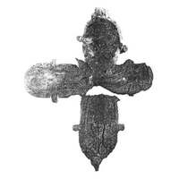

Catalog › CE-0999 · KOR2003-III.1.1.25
Encolpion distrus și deformat de foc: Răstignire pe față, Maica Domnului cu Pruncul pe revers
sec. a doua jumătate XII (1151–1200) · Maskovici, regiunea Vitebsk (raionul Braslav), Belarus · Muzeul Culturii Vechi Belaruse al Academiei Naționale de Științe (MDBK NAN), Minsk, fond științific-auxiliar
double-sided reliquary cross (enkolpion), aramă; c. a doua jumătate XII (1151–1200); found at Maskovici, regiunea Vitebsk (raionul Braslav), Belarus; kept at Muzeul Culturii Vechi Belaruse al Academiei Naționale de Științe (MDBK NAN), Minsk, fond științific-auxiliar.


Identificare
- Categorie
- Encolpion bivalv (relicvar)
- Material
- Aramă
- Tehnică
- Turnare în relief; Niello
- Stare
- Fragmentară
- Dimensiuni
- Î 134 × L 105 mm
Iconografie
- Descriere avers
- Encolpion distrus, părțile păstrate sunt puternic deformate, probabil în urma focului. Pe valva de față imaginea reliefată a lui Hristos răstignit și urme ale imaginilor în niello din medalionul de sus și din cel din dreapta; suprafața medalionului stâng este topită.
- Revers
- Maica Domnului cu Pruncul
- Descriere revers
- Valva de revers (fără brațul de jos și medalionul de sus, din 2 fragmente): imagine greu de distins a Maicii Domnului cu Pruncul și linii de contur adâncite ale imaginilor sfinților din medalionul din dreapta și cel de sus; pe alocuri în adâncituri s-au păstrat urme de niello.
Datare și atribuire
- Datare
- sec. a doua jumătate XII (1151–1200)
- Centru
- Necunoscut
- Tipologie
- Korzukhina–Peskova 2003, tip III 1 1
Descoperire
- Localitate
- Maskovici
- Regiune
- regiunea Vitebsk (raionul Braslav)
- Țară
- Belarus
- Context
- Fortificație
- Anul
- 1976
Păstrare și referințe
- Colecție
- Muzeul Culturii Vechi Belaruse al Academiei Naționale de Științe (MDBK NAN), Minsk, fond științific-auxiliar
- Bibliografie
- G. F. Korzukhina, A. A. Peskova, Древнерусские энколпионы. Нагрудные кресты-реликварии XI–XIII вв., Sankt-Petersburg, 2003 [Korzukhina–Peskova 2003], p. 105, cat. nr. III 1 1/25, reprodusă la Табл. 50 (planșe, p. 292). Bibliografie citată în sursă: Дучиц, arh. 1976, д. 543, с. 7–8; Дучиц 1977, 403–404; Дучиц 1983, 57–58; Дучиц 1991, 52, 54; Дучиц 1993, 666.
- Figura
- Табл. 50
- Planșe
- Korzukhina–Peskova 2003, Табл. 50 (planșă fără paginație proprie în PDF; p. 292 tipărită)
- Observații
- Datare după Peskova: sec. a doua jumătate XII. Circumstanțe: Săpături 1976 pe fortificație sub conducerea lui L. V. Duciț; găsit într-un strat cultural arat din sec. IX–XIV. Dimensiuni: h 13,4 cm cu balamalele. Foto: L. V. Duciț. Coordonate: nu sunt date în sursă.
Citare: Corpus Encolpiorum, CE-0999, Encolpion distrus și deformat de foc: Răstignire pe față, Maica Domnului cu Pruncul pe revers, --root/piese/KOR2003-III.1.1.25/ (accesat 2026-10-20).